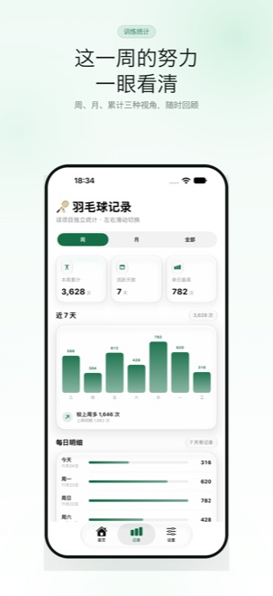
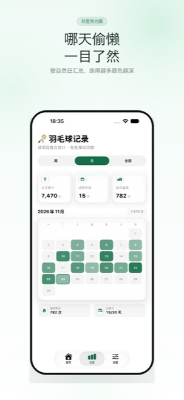
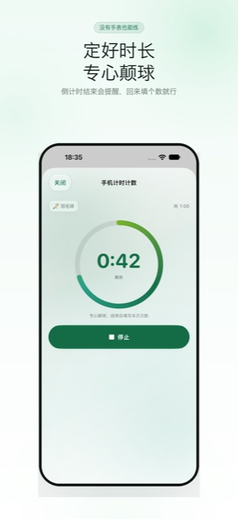

颠球BOUNCE · BALL BOUNCE COUNTER
为乒乓球、羽毛球、网球、足球等球类手感练习打造的计数与记录 App。 戴上 Apple Watch，动作传感器自动识别颠球并实时计数；没有手表，也能用手机计时手动记录。



周统计 · 月历热力图 · 计时手动计数
功能一览
从开始计数到回看进步，都在一台 iPhone 和一只 Apple Watch 上完成。
手表自动计数
在 Apple Watch 上开始练习，无需手动点击。每累计 10 次轻触提醒，练习结束后还能在手表上修正次数。
手机计时计数
选择 30、60、90 秒或自定义时长，倒计时结束后专心颠球，时间到再填写次数并保存。
每日目标与进度
为乒乓球、羽毛球、网球等项目分别设定每日目标，首页实时显示今日进度、完成比例与本周累计。
周 / 月数据统计
按周查看柱状图、每日明细与上周环比；按月查看日历热力图、最高单日与练习天数。
多项目独立统计
乒乓球、羽毛球、网球、足球与其他球类分开统计，左右轻扫即可切换项目。
写入「健康」
授权后，可把每次练习的运动项目、时长与次数写入 Apple 健康，与其他训练统一回顾。
手表与手机同步
练习结束后记录自动同步到 iPhone，所有数据集中管理，随时回看每一次进步。
清爽、上手即用
无需注册账号，打开就能练。适合日常颠球、球感训练与手眼协调练习。
数据只留在你的设备上
颠球没有账号系统、没有广告，也不含第三方分析 SDK。练习记录保存在本机，仅在 iPhone 与 Apple Watch 之间直接同步，不会上传到任何服务器。
需要帮助？
遇到计数、同步或权限相关的问题，先看看常见问题，或直接给我们写邮件。
常见问题
手表不计数、记录没同步、健康授权失败等常见情况的处理办法。
查看常见问题 →
邮件支持
把机型、系统版本与问题描述发给我们，我们会尽快回复。
839055164@qq.com →